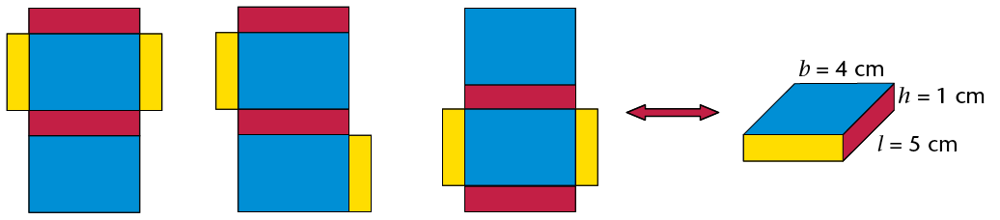

Buite-oppervlakte en volume van
In hierdie hoofstuk gaan jy die formules ondersoek wat ons kan gebruik om die oppervlakte van die oppervlakke aan die buitekant van kubusse en reghoekige prismas te bereken. Die gebruik van nette van hierdie 3D-voorwerpe sal jou help om te verstaan hoe ons by hierdie formules uitkom. Dan gaan jy die formules ondersoek wat ons kan gebruik om die hoeveelheid ruimte te bereken wat soliede kubusse en reghoekige prismas in beslag neem. Hierdie hoeveelheid ruimte staan bekend as hulle volume. Jy sal dan die verskil tussen die volume en die kapasiteit van kubusse en reghoekige prismas begin verstaan. Jy gaan ook leer oor die eenhede wat gebruik word om buite-oppervlakte, volume en kapasiteit te bereken en jy gaan uitvind hoe om tussen verskillende meeteenhede te herlei.
Buite-oppervlakte van kubusse en reghoekige prismas
Ondersoek buite-oppervlakte
-
Volg die instruksies hier onder om ’n papierkubus te maak.
Stap 1: Sny ’n deel van ’n A4-bladsy af sodat jy ’n vierkant oor he.

Stap 2: Sny die vierkant in twee gelyke helftes.

Stap 3: Vou elke helfte in die lengte om twee dubbellaag stroke te vorm.

Stap 4: Vou elke strook om vier vierkante te vorm. Voeg die twee stroke saam om ’n kubus te vorm. Hou die dele bymekaar met kleeflint.

-
Nommer elke vlak van die kubus. Hoeveel vlakke het die kubus?
-
Meet die sylengte van een vlak van die kubus.
-
Bereken die oppervlakte van een vlak van die kubus.
-
Tel die oppervlaktes van al die vlakke van die kubus bymekaar.
Die buite-oppervlakte van ’n voorwerp is die som van die oppervlaktes van al sy vlakke (of buitenste oppervlakke).
Net soos ander oppervlaktes, meet ons buite- oppervlakte in vierkante eenhede soos mm2, cm2 en m2.
’n Kubus het ses identiese vierkantige vlakke. ’n Dobbelsteen is ’n voorbeeld daarvan.
’n Reghoekige prisma het ook ses vlakke, maar sy vlakke kan vierkante en/of reghoeke wees. ’n Vuurhoutjieboksie is ’n voorbeeld van so ’n reghoekige prisma.
Gebruik nette van reghoekige prismas en kubusse
Dit is makliker om al die vlakke van ’n reghoekige prisma of kubus te sien as ons na die net kyk. Die net (of ontvouing) van ’n prisma is die plat figuur wat verkry word wanneer die prisma op sommige van sy rande oopgesny en dan oopgevou word.
-
Neem ’n vel papier en vou dit om ’n vuurhoutjieboksie sodat dit die hele boksie bedek sonder om te oorvleuel. Sny ekstra stukkies papier af sodat jy net die papier oor het wat elke vlak van die boksie bedek.
-
Vou die papier oop en trek lyne waar die papier gevou is. Jou vel papier kan soos een van die volgende nette lyk (daar is ook ander moontlikhede):

-
Let op dat daar ses reghoeke in die net is wat elkeen op ’n reghoekige vlak van die boksie pas. Wys die drie pare identiese reghoeke in elke net uit.

-
Gebruik die gegewe afmetings om die buite-oppervlakte van die prisma te bereken. (Tel al die vlakke se oppervlaktes op.)
-
Verduidelik vir ’n maat waarom jy dink die volgende formule korrek is of nie:
Buite-oppervlakte van ’n reghoekige prisma \(= 2(l \times b) + 2(l \times h) + 2(b \times h)\)
-
Hier is drie verskillende nette van dieselfde kubus.

-
Kan jy jou voorstel hoe die vierkante kan terugvou om ’n kubus te maak?
-
As die lengte van ’n rand van die kubus 1 cm is, wat is die oppervlakte van een van sy vlakke? __________Wat is die oppervlakte van al ses sy vlakke dan?
-
Verduidelik vir ’n maat waarom jy dink die volgende formule korrek is of nie: Buite-oppervlakte van ’n kubus \(=6(l\times l)=6l^2\)
-
As die lengte van ’n rand van die kubus hier bo 3 cm is, wat is die buite-oppervlakte van die kubus?
-
Bereken buite-oppervlaktes
-
Bereken die buite-oppervlaktes van die volgende reghoekige prismas en kubusse.
-
Die volgende twee bokse is reghoekige prismas. Die bokse moet geverf word.
-
Bereken die totale buite-oppervlakte van boks A en van boks B.
-
Wat sal dit kos om albei bokse te verf as die verf R1,34 per m2 kos?
-
-
Twee houers, wat reghoekige prismas is, word aan mekaar vasgeplak soos gewys word. Bereken die buite-oppervlakte van hierdie voorwerp. (Let op watter vlakke gesien kan word en watter nie.)

-
Hierdie groot plastiekmuur is 3 m \(\times\) 0,5 m \(\times\) 1,5 m. Dit moet vir die Uyavula Geletterdheidsprojek geverf word. Die muur het drie openinge wat A, B en C gemerk is. Die openinge gaan dwarsdeur die muur. Hulle afmetings is in mm.
-
Bereken die oppervlakte van die voorste en agterste oppervlakke wat geverf moet word.
Onthou uit die vorige hoofstuk:
1 cm2 = 100 mm2
1 m2= 10 000 cm2
-
Bereken die oppervlakte van die twee syvlakke asook van die bovlak.
-
Bereken die totale buite-oppervlakte van die muur, sonder die onderkant en die binne-oppervlakke waar die openinge is, want dit gaan nie geverf word nie.
-
Wat sal dit kos as die waterbasisverf R2,00 per m2 kos?
-


Volume van reghoekige prismas en kubusse
2D-figure is plat en het net twee dimensies, naamlik lengte (l) en breedte (b). 3D-voorwerpe het drie dimensies, naamlik lengte (l), breedte (b) en hoogte (h). Jy kan aan ’n dimensie dink as ’n rigting in ruimte. Kyk na hierdie voorbeelde:
3D-voorwerpe neem dus ruimte in beslag op ’n manier wat 2D-figure dit nie doen nie. Ons kan die hoeveelheid ruimte meet wat 3D-voorwerpe in beslag neem.
Elke voorwerp in die werklikheid is 3D. Selfs ’n vel papier is ’n 3D-voorwerp. Sy hoogte is omtrent 0,1 mm.
Kubusse om hoeveelheid ruimte te meet
Ons kan kubusse gebruik om die hoeveelheid ruimte te meet wat ’n voorwerp in beslag neem.
-
Identiese kubusvormige boublokkies is gebruik om die stapels hier onder te maak.

-
Watter stapel neem die minste ruimte in beslag?
-
Watter stapel neem die meeste ruimte in beslag?
-
Rangskik die stapels van die een wat die minste ruimte in beslag neem tot die een wat die meeste ruimte in beslag neem. (Skryf die letters van die stapels neer.)
Die ruimte (in alle rigtings) wat deur ’n 3D-voorwerp in beslag geneem word, word sy volume genoem.
Ons gebruik kubieke eenhede om volume te meet. ’n Kubus met rande van 1 cm. (d.w.s. \(1\text{ cm} \times 1\text{ cm} \times 1 \text{ cm})\) het ’n volume van een kubieke sentimeter \((1\text{ cm}^3)\).
-
-
Die reghoekige prisma hier regs bestaan uit 36 kubusse, elk met ’n randlengte van 1 cm. Die prisma het dus ’n volume van 36 kubieke sentimeter (36 cm3)

-
Dit word uitmekaargehaal en al 36 kubusse word weer opgestapel om ’n nuwe reghoekige prisma met ’n basis van vier kubusse te maak (sien A hier onder.) Hoeveel lae kubusse sal die nuwe prisma hê? Wat is die hoogte van die nuwe prisma?

-
Herhaal (a), maar maak ’n prisma met ’n basis van ses kubusse (sien B hier bo).
-
Watter een van die reghoekige prismas in vrae (a) en (b) neem die meeste ruimte in alle rigtings in beslag? (Watter een het die grootste volume?)
-
Wat sal die volume van die prisma in vraag (b) wees as daar altesaam 7 lae kubusse is?
-
’n Prisma word met 48 kubusse gebou, elkeen met ’n randlengte van 1 cm. Die basis bestaan uit 8 lae. Wat is die hoogte van die prisma?
-
Formule om volume te bereken
Jy kan op die volgende wyse aan die volume van ’n reghoekige prisma dink:
Stap 1: Meet die oppervlakte van die onderste vlak (ook die basis genoem) van ’n reghoekige prisma. Vir die prisma wat hier gegee word: \(A = l \times b = 6 \times 3 = 18\) vierkante eenhede.

Stap 2: ’n Laag kubusse wat elk 1 eenheid b = hoog is, word op die plat basis geplaas. 3 eenhede Die basis bestaan nou uit 18 kubusse \(6 \times 3 \times 1\) kubieke eenhede.

Stap 3: Nog drie lae kubusse word bygevoeg sodat daar altesaam 4 lae is. Die prisma se hoogte (h) s 4 eenhede. Die volume van die prisma is:

\[ \begin{align} V &= (6 \times 3) \times 4 \\ \text{or } V &= \text{Oppervlakte van basis } \times \text{getal lae }\\ &=(l \times b) \times h \end{align} \]
Dus:
\[ \begin{align} \textbf{Volume van ’n reghoekige prisma } & = \text{Oppervlakte van basis } \times \text{hoogte } \\ &= l \times b \times h \end{align} \]
\[ \begin{align} \textbf{Volume van ’n kubus } & = l \times l \times l \text{ (rande is almal ewe lank) } \\ &= l^3 \end{align} \]
Toepassing van die formules
-
Bereken die volume van hierdie prismas en kubusse.


-
Bereken die volume van prismas met die volgende afmetings:
- l = 7 m, b = 6 m, h
= 6 m
-
l = 55 cm, b = 10 cm, h = 20
cm
-
Oppervlakte van basis
= 48 m2, h = 4 m
- Oppervlakte van basis
= 16 mm2,
h = 12 mm
- l = 7 m, b = 6 m, h
= 6 m
-
Bereken die volume van kubusse met die volgende randlengtes:
- 7 cm
- 12 mm
- 7 cm
-
Bereken die volume van die volgende prismas met vierkantige basisse:
- sy van die basis
= 5 mm, h = 12
mm
- sy van die basis
= 11 m, h = 800 cm
- sy van die basis
= 5 mm, h = 12
mm
-
Die volume van ’n prisma is 375 m3. Wat is die hoogte van die prisma as die lengte 8 m is en die breedte 15 m is?
Herlei tussen kubieke eenhede
Kubieke eenhede om volume te meet
Hierdie tekening wys ’n kubus (A) met ’n randlengte van 1 m. ’n Klein kubus (B) met ’n randlengte van 1 cm word ook gewys.

Hoeveel klein kubusse kan in die groot kubus inpas?
- 100 klein kubusse kan langs die lengte van die basis van kubus A inpas (want daar is 100 cm in 1 m).
- 100 klein kubusse kan langs die lengte van die basis van kubus A inpas (want daar is 100 cm in 1 m).
- 100 klein kubusse kan langs die hoogte van kubus A inpas
\[ \begin{align} \text{ Totale getal kubusse van }1 \text{ cm}^3 \text{ in 1 m}^3 &= 100 \times 100 \times 100\\ &= 1 000 000 \\ \therefore 1 \text{ m}^3 &= 1000000 \text{ cm}^3 \end{align} \]
Werk uit hoeveel mm3 is gelyk aan 1 cm3:
\[ \begin{align} 1 \text{ cm}^3 & = 1 \text{ cm} \times 1 \text{ cm} \times 1 \text{ cm}\\ &= \text{______ mm} \times \text{______ mm} \times \text{______ mm}\\ &= \text{______ mm}^3 \end{align} \]
Kubieke eenhede:
1 m3 = 1 000 000 cm3
(vermenigvuldig met 1 000 000 om m3 na cm3 te herlei)
1 cm3 = 0,000001 m3
(deel deur 1 000 000 om cm3 na m3 te herlei)
1 cm3 = 1 000 mm3
(vermenigvuldig met 1 000 om cm3 na mm3 te herlei)
1 mm3 = 0,001 cm3
(deel deur 1 000 om mm3na cm3 te herlei)
Werk met kubieke eenhede
-
Watter eenheid, die kubieke sentimeter (cm3) of die kubieke meter (m3), sal gebruik word om die volume van elk van die volgende te meet?
-
’n koekie seep
-
’n boek
-
’n dakbalk
-
sand op ’n vragmotor
-
’n reghoekige betonmuur
-
’n dobbelsteen
-
water in ’n swembad
-
medisyne in ’n spuit
-
-
Skryf die volgende volumes in cm3:
-
1 000 mm3
-
3 000 mm3
-
2 500 mm3
-
4 450 mm3
-
7 824 mm3
-
50 mm3
-
-
Skryf die volgende volumes in in m3:
-
1 000 000 cm3
-
4 000 000 cm3
-
1 500 000 cm3
-
2 350 000 cm3
-
500 000 cm3
-
350 000 cm3
-
-
Skryf die volgende volumes in cm3:
-
2 000 mm3
-
4 120 mm3
-
1,5 m3
-
34 m3
-
50 000 mm3
-
2,23 m3
-
-
’n Reghoekige gat is vir ’n kinderswembad gegrawe. Dit is 7 m lank, 4 m wyd en 1 m diep. Wat is die volume grond wat uitgegrawe is?
-
Bereken die volume hout in die plank wat hier onder gewys word. Antwoord in cm3.

-
Die tekening wys die basis (van onder af gesien) van ’n stapel wat met kubusse van 1 cm3gebou is. Die stapel is orals 80 mm hoog.

-
Wat is die volume van die stapel?
-
Voltooi die volgende:
Volume van stapel = oppervlakte van basis
-
-
Bereken die volume van elk van die volgende reghoekige prismas
-
lengte = 20 cm; breedte = 15 cm;hoogte = 10 cm
-
lengte = 130 mm; breedte = 10 cm; hoogte = 5 mm
-
lengte = 1 200 cm; breedte = 5,5 m; hoogte = 3 m
-
lengte = 1,2 m; breedte = 2,25 m; hoogte = 4 m
-
oppervlakte van basis = 300 cm2; hoogte = 150 mm
-
oppervlakte van basis = 12 m2; hoogte = 2,25 m
-
Volume en kapasiteit
Die ruimte in ’n houer word die interne volume, of kapasiteit , van die houer genoem. Kapasiteit word dikwels in eenhede van milliliter (ml), liter (ℓ) en kiloliter (kl) gemeet. Dit kan egter ook in kubieke eenhede gemeet word.
Ekwivalente eenhede vir volume en kapasiteit
As die inhoud van ’n 1 ℓ bottel in ’n kubus- vormige houer met interne afmetings van 10 cm \(\times\) 10 cm \(\times\) 10 cm,gegooi word, sal dit die houer presies volmaak. Dus:
\[ \begin{align} (10\text{ cm} \times 10 \text{ cm} \times 10 \text{ cm}) &= 1 ℓ\\ \text{or } 1 000 \text{ cm}^3&= 1 ℓ \end{align} \]
\[ \begin{align} \text{Aangesien} 1 ℓ &= 1 000 \text{ ml} \\ 1 000 \text{ cm}^3 &= 1 000 \text{ ml} &&\text{ [1 ℓ} = 1 000 \text{ cm}^3]\\ \therefore 1 \text{ cm}^3 &= 1 \text{ ml } &&\text{[deel albei kante deur 1 000]} \end{align}\]\[ \begin{align} \text{ Aangesien 1 kl} &= 1 000 ℓ &\\ &= 1000 \times (1000 \text{ cm}^3) && \text{ [1 ℓ = 1000 cm}^3\text{]} \\ & = 1 000 000 \text{ cm}^3 &\\ & = 1 \text{ m}^3 && \text{[ 1 000 000 cm}^3 = 1 \text{ m}^3\text{]} \end{align}\]
Dit beteken ’n voorwerp met ’n volume van 1 cm3sal dieselfde hoeveelheid ruimte in beslag neem as 1 ml water. ’n Voorwerp met ’n volume van 1 m3 sal die ruimte van 1 kl water in beslag neem.
Die volgende diagram wys die herleidings op ’n ander manier:
Herleiding is die verandering van iets na iets anders. In hierdie geval verwys dit na veranderings tussen ekwivalente meeteenhede.
Uit die diagram op die vorige bladsy kan jy sien dat:
- 1 ℓ = 1 000 ml; 1 ml = 0,001 ℓ
- 1 kl = 1 000 ℓ; 1 ℓ = 0,001 kl
- 1 ml = 1 cm3
- 1 ℓ = 1 000 cm3
- 1 kl = 1 000 000 cm3 of 1 m3
Onthou hierdie herleidings:
1 ml = 1 cm3
1 kl = 1 m3
Berekeninge met volume en kapasiteit
-
Skryf die volgende volumes in ml:
-
2 000 cm3
-
250 cm3
-
1 ℓ
-
4 ℓ
-
2,5 ℓ
-
6,85 ℓ
-
0,5 ℓ
-
0,5 cm3
-
-
Skryf die volgende volumes in kl:
-
2 000 ℓ
-
2 500 ℓ
-
5 m3
-
6 500 m3
-
3 000 000 cm3
-
1 423 000 cm3
-
20 ℓ
-
2,5 ℓ
-
-
’n Glas kan tot 250 ml water hou. Wat is die kapasiteit van die glas:
-
in ml?
-
in cm3?
-
-
’n Blompot is soos ’n reghoekige prisma gevorm. Die binne-afmetings is 15 cm \(\times\) 10 cm \(\times\) 20 cm. Wat is die kapasiteit van die blompot (in ml)?

-
’n Vloeistof word uit ’n vol 2 ℓ bottel in ’n glastenk met binne-afmetings van 20 cm by 20 cm by 20 cm gegooi.
-
Wat is die volume van die vloeistof wanneer dit in die bottel is?
-
Wat is die kapasiteit van die bottel?
-
Wat is die volume van die vloeistof nadat dit in die tenk gegooi is?
-
Wat is die kapasiteit van die tenk?
-
Hoe hoog is die vloeistof in die tenk?
-
In vraag 5 hier bo behoort jy die volgende te gevind het:
\[ \begin{align} \text{ Volume van vloeistof in tenk } &= \text{Volume van vloeistof in bottel }\\ 20 \times 20 \times h \text{(vloeistof se hoogte in tenk)} &= 2 000 \text{ cm}^3 \\ h & = \frac{2000}{(20 \times 20)}\\ &= 5 \text{ cm} \end{align} \]
Let wel: Die kapasiteit van die tenk is 20 cm \(\times\) 20 cm \(\times\) 20 cm = 8 000 cm3 (8 ℓ).
Die volume van die vloeistof in die bottel is 2 000 cm3 (2 ℓ).
-
Doen die volgende herleidings:
- 2 348 cm2 = ______ m2
- 5,104 m2 = ______ cm2
- 1 m3 = ______ kl
- 250 cm3 =______ ml = ______ ℓ
- 0,5 kl = ______ ℓ = ______ ml
- 6,850 ℓ = ______ ml = ______ cm3
-
’n Reghoekige prisma se afmetings 8 m \(\times\) 4 m \(\times\) 3 m. Bereken:
- die buite-oppervlakte
- die volume
- die buite-oppervlakte
-
’n Seun het 27 kubusse met randlengtes van 20 mm. Hy gebruik hierdie kubusse om een groot kubus te bou.
-
Wat is die volume van die kubus as hy al 27 klein kubusse gebruik?
-
Wat is die randlengte van die groot kubus?
-
Wat is die buite-oppervlakte van die groot kubus?
-
-
’n Glastenk het die volgende binne-afmetings: lengte = 250 mm, breedte = 120 mm en hoogte = 100 mm. Bereken die kapasiteit van die tenk:
-
in kubieke sentimeter
-
in milliliter
-
in liter
-
-
Bereken die kapasiteit van elk van die volgende reghoekige houers. Die binne- afmetings is gegee.
Lengte
Breedte
Hoogte
Kapasiteit
(a)
15 mm
8 mm
5 mm
______ cm3
(b)
2 m
50 cm
30 cm
______ ℓ
(c)
3 m
2 m
1,5 m
______ kl
-
’n Watertenk het ’n vierkantige basis met interne randlengtes van 150 mm. Wat is die hoogte van die tenk as die maksimum kapasiteit van die tenk 11 250 cm3 is?